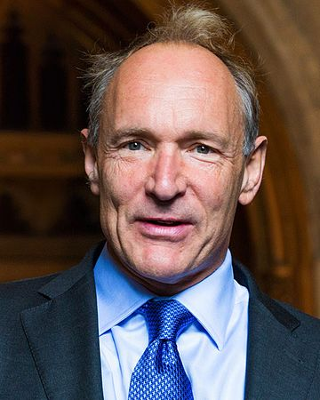
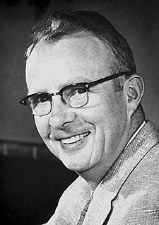

Нильс Хе́нрик Дави́д Бор (дат. Niels Henrik David Bohr, датский: [ˈne̝ls ˈpoɐ̯ˀ]; 7 октября 1885, Копенгаген — 18 ноября 1962, там же) — датский физик-теоретик и общественный деятель, один из создателей современной физики. Лауреат Нобелевской премии по физике (1922). Член Датского королевского общества (1917) и его президент с 1939 года. Был членом более чем 20 академий наук мира, в том числе иностранным почётным членом Академии наук СССР (1929; членом-корреспондентом — с 1924).
Бор известен как создатель первой квантовой теории атома и активный участник разработки основ квантовой механики. Он также внёс значительный вклад в развитие теории атомного ядра и ядерных реакций, процессов взаимодействия элементарных частиц со средой.

Сэр Тимоти Джон Бе́рнерс-Ли OM (англ. Sir Timothy John «Tim» Berners-Lee; род. 8 июня 1955 года, Лондон) — создатель URI, URL, HTTP, HTML и Всемирной паутины (совместно с Робертом Кайо) и действующий глава Консорциума Всемирной паутины. Автор концепции семантической паутины, множества других разработок в области информационных технологий.
В 1989 году, работая в CERN, Бернерс-Ли предложил проект, известный как Всемирная паутина (англ. World Wide Web). Проект подразумевал публикацию гипертекстовых документов, связанных между собой гиперссылками, что облегчило бы поиск и консолидацию информации. Проект Паутины был предназначен для учёных CERN и первоначально использовался во внутренней сети CERN. Для осуществления проекта Тимом Бернерсом-Ли (совместно с его помощниками) были изобретены идентификаторы URI (и, как частный случай, URL), протокол HTTP и язык HTML. Эти технологии легли в основу современной Всемирной паутины. В период с 1991 по 1993 год Бернерс-Ли усовершенствовал технические спецификации стандартов и опубликовал их.
В рамках проекта Бернерс-Ли написал первый в мире веб-сервер «httpd» и первый в мире гипертекстовый веб-браузер для компьютера NeXT, называвшийся «WorldWideWeb» (позднее «Nexus», чтобы избежать путаницы между названием технологии («Всемирная сеть») и названием браузера). Этот браузер был одновременно и WYSIWYG-редактором (англ. WYSIWYG от What You See Is What You Get, «что видишь, то и получишь»), его разработка велась с октября по декабрь 1990 года. Программа работала в среде «NeXTStep» и начала распространяться по Интернету летом 1991 года.
Первый в мире веб-сайт Бернерс-Ли создал по адресу http://info.cern.ch (теперь сайт хранится в архиве). Этот сайт появился онлайн в Интернете 6 августа 1991 года. На этом сайте описывалось, что такое Всемирная паутина, как установить веб-сервер, как заполучить браузер и т. п. Этот сайт также являлся первым в мире интернет-каталогом, потому что позже Тим Бернерс-Ли разместил и поддерживал там список ссылок на другие сайты.

Лу́ис Уо́лтер А́льварес (англ. Luis Walter Alvarez; 13 июня 1911, Сан-Франциско — 1 сентября 1988, Беркли) — американский физик-экспериментатор. Член НАН США (1947). Нобелевский лауреат (1968).
Родился Луис Альварес в Сан-Франциско в семье профессора Калифорнийского университета, врача и журналиста в области медицины, Уолтера Клемента Альвареса. Учился в Чикагском университете, который окончил в 1932 году. С 1936 года работал в Калифорнийском университете, с 1945 года в должности профессора. Одновременно в 1954—1959 и 1976—1978 занимал должность заместителя директора Радиационной лаборатории имени Э. О. Лоуренса в Беркли. В 1969 году Альварес был избран президентом Американского физического общества.
Научные работы Альвареса посвящены атомной и ядерной физике, ускорительной технике, физике элементарных частиц и космических лучей, оптике, радиолокации. В 1937 году им был открыт новый тип радиоактивного превращения — явление К-захвата (захват ядром электрона из К-слоя). В 1939 году, воспользовавшись циклотроном как высокочастотным масс-спектрометром, он обнаружил изотоп гелия He-3. Совместно с Ф. Блохом в 1940 году Альварес определил магнитный момент свободного нейтрона. В том же году ему впервые удалось ускорить ионы углерода, одновременно предложив оригинальный селектор скоростей по времени пролёта.
Во время Второй мировой войны он участвовал в разработке ядерной бомбы («Манхэттенский проект»), а позже исследовал последствия её применения в Хиросиме. После окончания войны, в 1946 году, им был построен первый линейный ускоритель протонов с трубками дрейфа. Позже Альварес создал первую большую пузырьковую камеру и разработал современную методику работы с такими устройствами, что сделало их пригодными для количественного исследования элементарных частиц. В частности, под его руководством была реализована водородная пузырьковая камера и получены миллионы снимков взаимодействий частиц. Что касается методики, то на её основе, начиная с 1955 года, был осуществлен большой цикл исследований, приведший к открытию в 1960 году короткоживущих нестабильных частиц — так называемых резонансов. Эта работа в 1968 году была удостоена Нобелевской премии по физике («За открытие множества резонансных состояний, ставшее возможным благодаря использованию водородных пузырьковых камер и анализу данных»[6]).
Вместе с большим коллективом исследователей в 1956 году Альварес обнаружил новую элементарную частицу — сигма-нуль-гиперон. В 1955—1956 годах им было экспериментально доказано, что тау- и тета-мезоны имеют приблизительно равные массы и времена жизни, что говорит об идентичности этих частиц. В 1956 Альварес открыл важное явление мюонного катализа, а в 1961 году ещё одну частицу — омега-мезон.